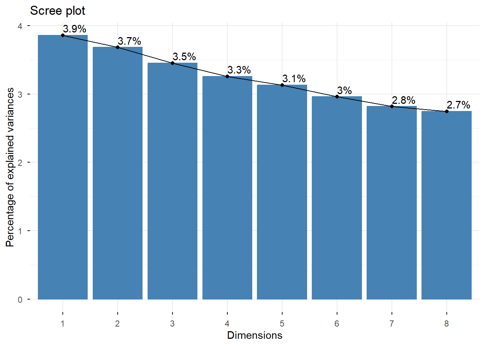
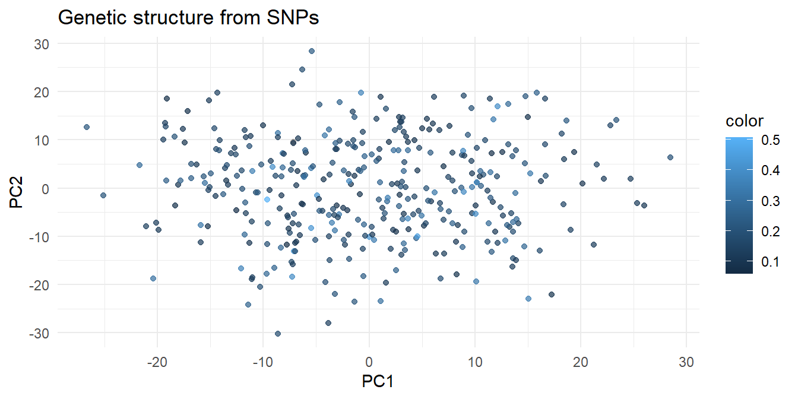
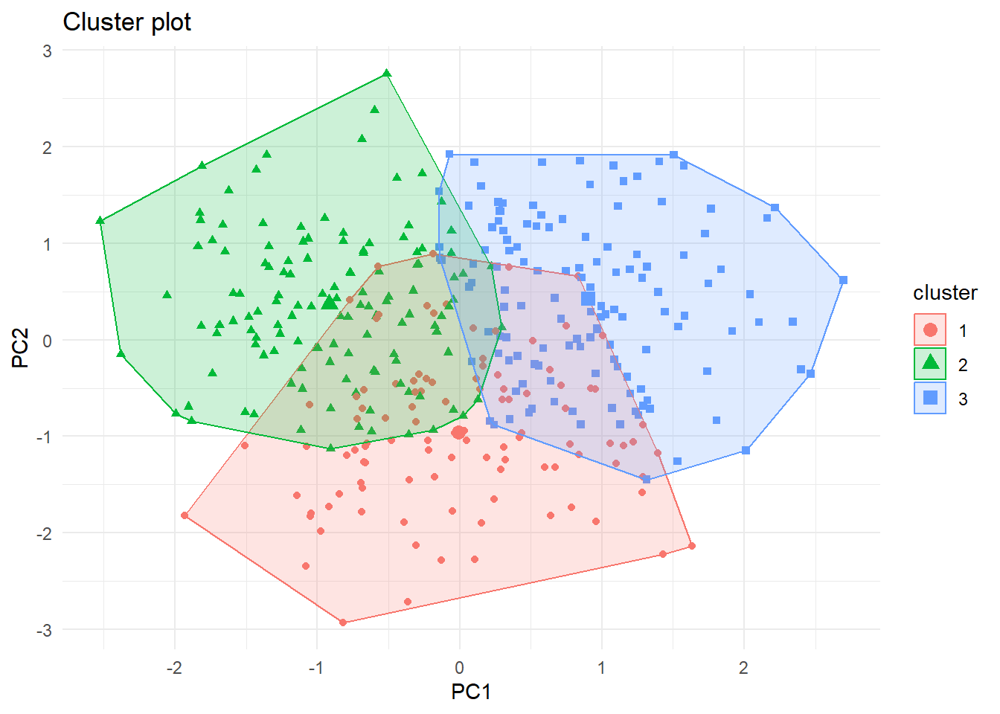
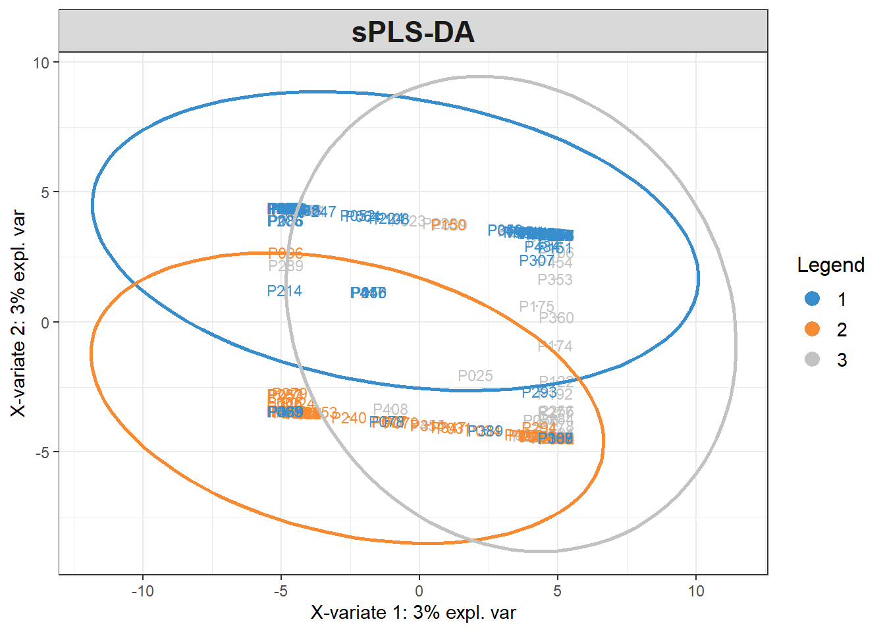
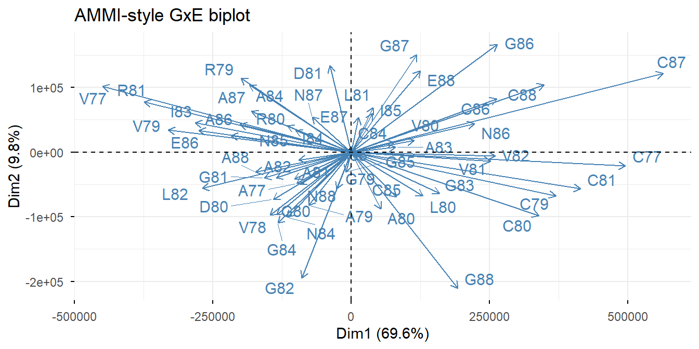

flowchart LR
A[Scaling &<br/>distance] --> B[PCA<br/>structure & QC]
B --> C[Clustering<br/>k-means · hierarchical · mclust]
C --> D[sPLS-DA<br/>supervised, sparse]
D --> E[Validation<br/>permutation · CV]
Week 2 — Multivariate Statistics & Dimension Reduction
PCA, PLS-DA, and clustering on crop diversity data
Dataset: agridat::gauch.soy multi-environment soybean for PCA-of-GxE, plus a built-in genomic marker matrix from sommer::DT_cpdata (real 363-line apple-progeny SNP data) standing in for a pea/canola panel — swap in your own VCF-derived matrix with one line.
1 1. PCA — what it actually does
PCA eigen-decomposes the covariance matrix: PC1 is the direction of maximum variance, PC2 the next, orthogonal. On a marker matrix, leading PCs approximate ancestry — the population structure you correct for in GWAS.
Code
library(tidyverse); library(sommer); library(factoextra)
data(DT_cpdata) # DT = pheno, GT = markers (-1/0/1)
M <- GT_cpdata
p <- prcomp(M, scale. = TRUE)
fviz_eig(p, addlabels = TRUE, ncp = 8)
Code
scores <- as_tibble(p$x[,1:2]) |> mutate(color = DT_cpdata$color)
ggplot(scores, aes(PC1, PC2, colour = color)) + geom_point(alpha = .7) +
theme_minimal() + labs(title = "Genetic structure from SNPs")
Tip
Swap in your crop: M <- vcfR::extract.gt(...) → numeric matrix → identical workflow for a pea or canola panel.
2 2. How many groups? Clustering with validation
Code
library(mclust)
km <- kmeans(p$x[,1:5], centers = 3, nstart = 25)
mc <- Mclust(p$x[,1:5], G = 1:6) # model-based; picks G by BIC
mc$G[1] 1Code
fviz_cluster(km, data = p$x[,1:2], geom = "point") + theme_minimal()
k-means needs k chosen; mclust fits Gaussian mixtures and lets BIC choose. Report silhouette or BIC, never just a pretty plot.
3 3. Supervised: sparse PLS-DA
PCA ignores labels. PLS-DA finds components that separate known groups; the sparse version selects a small marker/metabolite panel — interpretable and directly useful for assay design.
Code
library(mixOmics)
Y <- factor(km$cluster) # demo labels; use market class/origin in practice
res <- splsda(M, Y, ncomp = 2, keepX = c(30, 20))
plotIndiv(res, ellipse = TRUE, legend = TRUE, title = "sPLS-DA")
Honest validation — mandatory:
Code
perf(res, validation = "Mfold", folds = 5, nrepeat = 20) # error rates
# + permutation test: shuffle Y, refit — separation should collapsesPLS-DA will happily “separate” random labels; permutation testing is what keeps you honest (a favourite interview probe).
4 4. GxE with PCA: the AMMI idea
Code
library(agridat); data(gauch.soy)
gxe <- gauch.soy |> group_by(gen, env) |> summarise(y = mean(yield), .groups="drop") |>
pivot_wider(names_from = env, values_from = y) |> column_to_rownames("gen")
gxe_c <- sweep(sweep(as.matrix(gxe), 1, rowMeans(gxe)), 2, colMeans(gxe)) + mean(as.matrix(gxe))
pg <- prcomp(gxe_c)
fviz_pca_biplot(pg, repel = TRUE, geom = "point", title = "AMMI-style GxE biplot")
Genotypes near the origin are stable; those aligned with an environment vector are specifically adapted — the statistical heart of MET interpretation.
5 Exercises
- Choose k for the SNP data by silhouette width; does it agree with mclust’s BIC?
- Run
perf()on the sPLS-DA — report the balanced error rate per component. - Replace demo labels with
DT_cpdata$colorclasses and re-select markers; how many are needed for <10% error?
Data credits: DT_cpdata (Covarrubias-Pazaran, sommer); Gauch soybean (agridat).